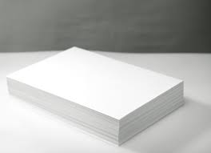
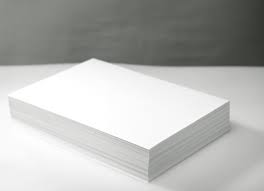

Paper products are called upon to meet the needs of daily life. All around us, we rely on paper through much of our waking day. Some of these products are so needed that they can be taken for granted. Life would be much different without paper products, so it is worth looking at many of the ways paper plays a vital role in our lives. Wether you grab a cup of coffee to go, exchange those business cards or have your fovorite pizza delivered, your day unfolds with paper. See our products below.
 

Products
Printing and Writing Paper; Paper-based Packaging: Containerboard, Paperboard, Paper bags and Shipping Sacks, Pulp, Tissue
Sustainability
MUNDER DIFFLIN members are committed to preserving and growing the economic contributions of the industry and its individual companies to society;
Recycling
The recycling process can begin at any number of locations, including community curbside programs, drop-off centers, schools, or offices.
Facilities
MUNDER DIFFLIN owns and operates a paper mill and converting facility in northeastern Oklahoma.